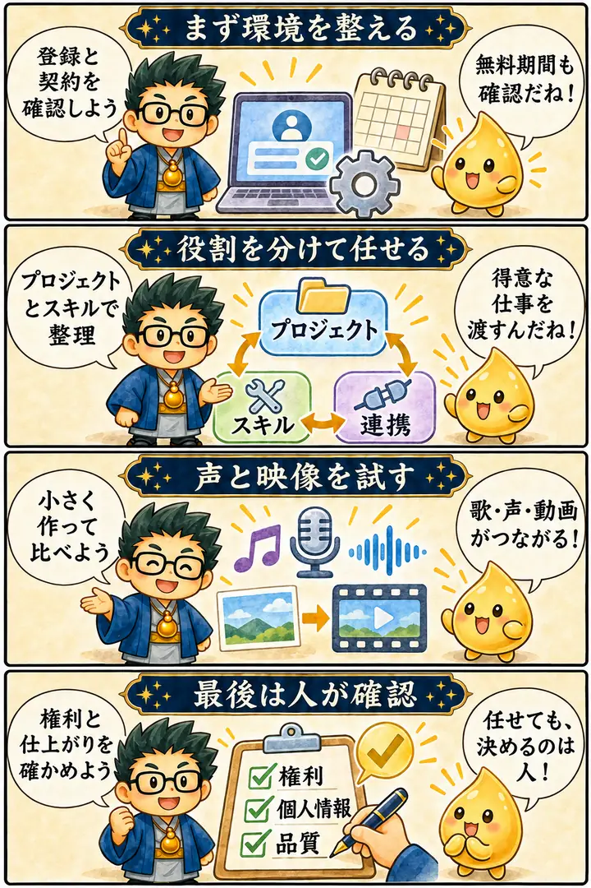

第4期 リアル講座・第2回
AIを使い始める：導入・エージェント・音声映像
① Claude・Codexを使い始めるをYouTubeで見る ↗
② AIエージェント入門をYouTubeで見る ↗
③ AIで音声と映像を作るをYouTubeで見る ↗
この回の要約
AIは「とりあえず全部任せる」のではなく、環境を整え、役割を分け、小さく試して、人が確認する。
3本の動画で学ぶ回です。第1部ではアカウント・契約・インストール、第2部ではプロジェクト・スキル・MCPなどAIエージェントの考え方、第3部ではSuno・Fish Audio・動画生成の実演を学びました。
料金やプラン、画面は2026年10月収録時点の情報です。実際に契約するときは、必ず公式画面で現在の条件を確認してください。
4コマ漫画でつかむ

タイムスタンプ
この回は動画が3本あります。時間を押すと、上の動画がその動画・場面に切り替わります。
① Claude・Codexを使い始める
② AIエージェント入門
③ AIで音声と映像を作る
質疑応答
※ 講義の要約と書き起こしをもとに、学習用に整理・再構成しています。吹き出しは逐語引用ではありません。
無料体験は、開始日だけでなく終了日も見る
① 01:45から見る ▶無料体験なら、とりあえず始めても大丈夫ですか？
開始する前に、無料期間、更新日、請求方法、解約の場所を確認します。画面や料金は変わるので、現在の公式表示を基準にしてください。
持ち帰り：契約画面を保存し、次の更新日を自分のカレンダーにも残す。
自分のOSに合う導入方法を選ぶ
① 21:56から見る ▶動画と同じボタンが見当たりません。
WindowsとMac、古い画面と新しい画面では手順が違います。まずOSとアプリの版を確かめ、公式の案内を見ながら進めます。
持ち帰り：動画の画面を完全に再現するより、自分の環境を言葉にできるようにする。
大量に作れることと、良いものを選べることは別
② 05:32から見る ▶エージェントに任せれば、たくさん作るほど良くなりますか？
量を増やす力はAIの得意分野です。ただし、誰に何を届けるか、どれを採用するかは人が判断します。先に合格条件を決めましょう。
持ち帰り：制作数ではなく、採用基準を三つ書く。
連携する前に、任せる範囲を決める
② 15:46から見る ▶MCPやプラグインは、全部つないだ方が便利ですか？
便利さと権限はセットです。必要な作業だけを、必要な期間と範囲でつなぎます。公開、送信、決済など重要な操作は、人の確認を残します。
持ち帰り：接続先ごとに「読む」「作る」「公開する」を分けて考える。
声と映像は、権利と本人性まで確認する
③ 19:05から見る ▶声や顔を作れたら、そのまま公開してよいですか？
素材、声、人物、音楽の利用条件を確認します。本人の許可が必要なものや、誤解を招く表現は公開しません。短い試作で品質も確かめます。
持ち帰り：権利・個人情報・品質の三点を、公開前チェックにする。
覚えておきたいこと
- 環境を整えるアカウント、契約期間、課金状態、OSを確認し、自分の環境に合う導入方法を選ぶ。
- 役割を分けて任せるプロジェクト、スキル、連携先を整理し、AIへ渡す仕事と人が判断する仕事を分ける。
- 小さく作って比べる歌、読み上げ、対話、画像からの動画を短く試し、設定違いの結果を比べる。
- 最後は人が確認する権利、個人情報、品質、目的との一致を確かめてから、作品や業務に使う。
復習ポイント
講義内の占術上の説明・時代の読み・象徴的な解釈は、講師の見立てです。客観的な事実や将来を保証するものではありません。